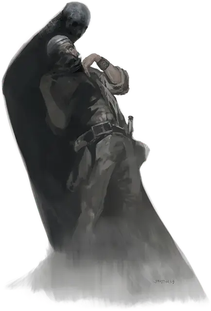

Тень
Shadow
Средняя Нежить, хаотично-злая

Класс Доспеха 12
Хиты 16 (3к8 + 3)
Скорость 40 футов
| мод | спас | ||
|---|---|---|---|
| СИЛ | 6 | −2 | −2 |
| ЛОВ | 14 | +2 | +2 |
| ТЕЛ | 13 | +1 | +1 |
| мод | спас | ||
|---|---|---|---|
| ИНТ | 6 | −2 | −2 |
| МДР | 10 | +0 | +0 |
| ХАР | 8 | −1 | −1 |
Навыки Скрытность +4
Уязвимость к урону излучение
Сопротивление урону звук, кислота, огонь, холод, электричество; дробящий, колющий, рубящий от немагических атак
Иммунитет к урону некротическая энергия, яд
Иммунитет к состояниям сбивание с ног, паралич, отравление, опутанность, окаменение, истощение, испуг, захват
Чувства тёмное зрение 60 футов, пассивное Восприятие 10
Опасность 1/2 (100 опыта)
Бонус мастерства +2
Среда обитания Город, Подземье
Особенности
Аморфный. Тень может перемещаться сквозь пространство шириной в 1 дюйм без протискивания.
Скрытность в тени. Находясь в области тусклого освещения или темноты, тень может совершать действие Засада бонусным действием.
Слабость на солнечном свете. Под солнечным светом тень совершает с помехой броски атаки, проверки характеристик и спасброски.
Действия
Вытягивание силы. Рукопашная атака оружием: +4 к попаданию, досягаемость 5 футов, одно существо. Попадание: 9 (2к6 + 2) урона некротической энергией, и значение Силы цели уменьшается на 1к4. Цель умирает, если значение её Силы уменьшается до 0. Уменьшение длится до тех пор, пока цель не окончит короткий или продолжительный отдых.
Если от этой атаки умрёт Гуманоид с незлым мировоззрением, через 1к4 часа из трупа выйдет новая тень.
Описание
Тень это нежить, напоминающая гипертрофированную человеческую тень.
Тёмный нрав. Тень тянется к жизненной силе живых существ из тьмы. Тени могут поглотить энергию любого существа, но их особенно тянет к незапятнанным злом созданиям. Существо, которое живёт добром и праведностью, вызывает у голодной тени самую сильную тягу. По мере того как тень высасывает жизненную силу существа, тень жертвы становится темнее, и начинает двигаться по собственной воле. После смерти тень существа вырывается на свободу, становясь новой нежитью, стремящейся поглотить ещё чью-нибудь жизнь.
Если существо, из которого сформировалась новая тень, каким-то образом вернётся к жизни, его тень-нежить чувствует это возвращение. Тень может начать искать своего «родителя», чтобы убить. Вне зависимости от того, преследует ли тень свою живую часть, существо, из которого она была создана, больше не отбрасывает тень, пока это чудовище не будет уничтожено.
Природа нежити. Тени не нужен воздух, еда, питье и сон.